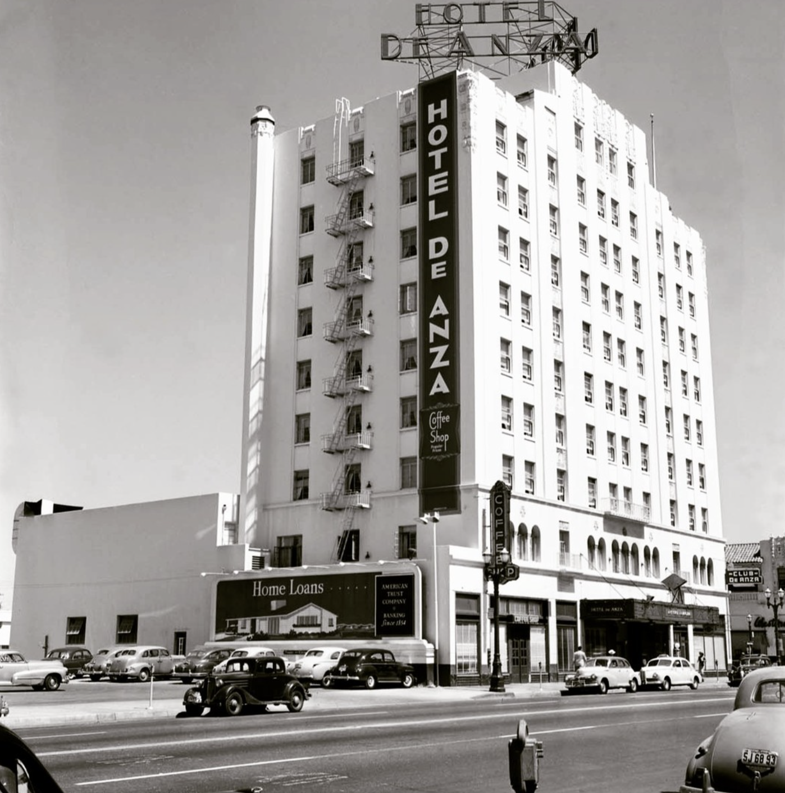
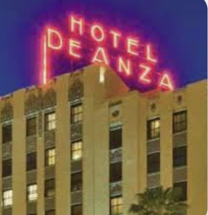
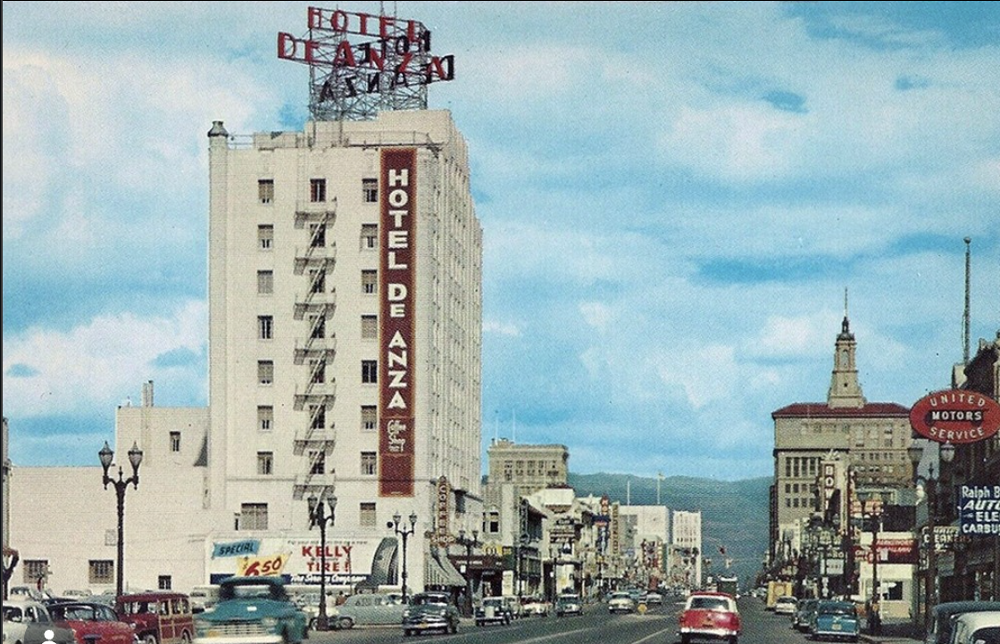

← All Stops
Downtown San Jose: Preserved
Stop 3 of 8
Hotel De Anza
Next: San Pedro Square Market →
Historic Photos

The Hotel De Anza in the early 1950s, when exterior fire escapes still ran down its facade.

The hotel's rooftop neon sign in the early 1950s, the same design PAC*SJ restored using hand-bent glass and relit in 2025.

A 1950s postcard view of Hotel De Anza anchoring West Santa Clara Street.
Next Stop
San Pedro Square Market →